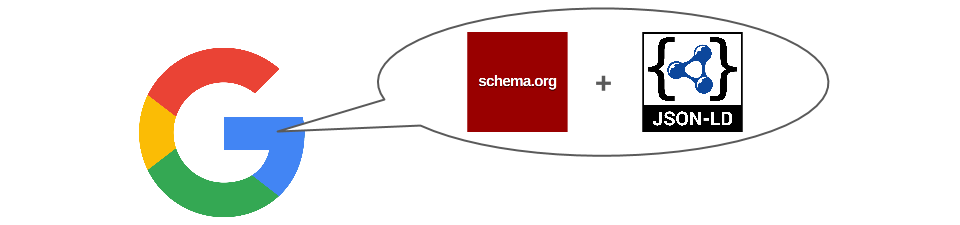

About Sniffypedia
Why a Sniffypedia?
Identifiers without associations is like phone numbers without names
There are billions of devices that are radio-identifiable at a human scale. Infrastructure can detect, identify and locate them in real time. But what's the point of making "things" identifiable if you can't associate them with anything? Sniffypedia associates identifiers with structured data about the products and organizations they represent, including links to websites, social media channels and images.
adabfb006e7d4601bda2bffaa68956bais as meaningless as an unknown phone number.
But when you know it's a Fitbit, meaningful context emerges.
To the best of our knowledge, an open, collaborative database of these associations does not exist, hence the creation of Sniffypedia!
Why structured data?
Organised, connected data helps machines understand our world
The Internet of Things can be defined as computers understanding the physical world, without the need for human-entered data (video). With structured data about the every "thing" that's identifiable, technology becomes increasingly contextually aware, and can reduce inefficiencies and improve human experiences.
Recently, the major search engines have championed structured data in the form of Schema.org and JSON-LD as a standard means to represent and connect concepts from people to events to products and beyond. Sniffypedia follows their lead.
What's the metric for success?
This project will complete successfully when only one file remains
The heart of this project is index.js: an exhaustive list of identifier and URL pairs. Essentially, it's the phone book. Ideally those URLs should point to the websites of the products and organizations associated with the identifiers. But in the absence of structured data at those websites, the data is instead hosted as part of Sniffypedia on GitHub.
The project will complete successfully when only the index.js file remains relevant. Until then, maximising the number of "things" that can be associated and represented through this open, collaborative project is the key metric of success.
Who initiated Sniffypedia and why?
At reelyActive we got tired of waiting for someone else to do it
This project was initiated by reelyActive. In 2014 at the inaugural WearHacks hackathon, we "sniffed" for the first time a significant number of Bluetooth Low Energy devices, and spent the weekend coding their associations into our open source chickadee software package. In 2015 we pitched the Bluetooth SIG about the need for such a project. We also migrated to the structured data format described above.
In late 2015 we made a feeble attempt at making Sniffypedia a Wiki, which we quickly abandoned. And by 2016, with still no such project or standardisation in sight, and realising that GitHub pages were perfectly suited to the task, we finally motivated ourselves to initiate the Sniffypedia you see here!

Why is this hosted on GitHub?
As they say: "GitHub is how people build software"
Sniffypedia is currently hosted on GitHub, as the GitHub Pages branch of reelyActive's sniffypedia repository. We made the decision to host on GitHub for two key reasons:
- anyone can easily clone the entire Sniffypedia repository and use it for whatever purpose they require, both on a local server or in the cloud
- anyone can easily contribute associations and/or structured data via a pull request, encouraging continuous improvement
How is this licensed?
As freely and openly as possible
We selected what we felt were the most appropriate free and open licenses available. Know of a license that's more appropriate, free and open? Let the community know why you think so!
What's up with the logo?
Have a better idea for a logo?
The working logo of Sniffypedia is that of the "unknown radio device" from a reelyActive pitch deck dating back to the summer of 2013. The relevant slides are below. Have a better idea for a logo? This project is open to contributions!